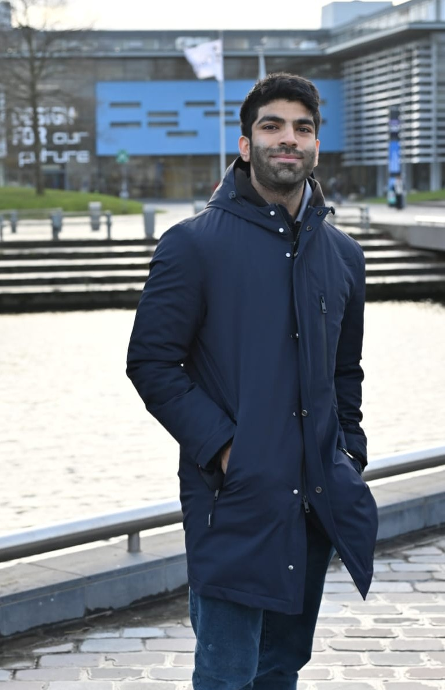

I am Hitesh Dialani, holding a Master's degree in Electrical Engineering with a specialization in Power Electronics and Motors. I completed both my bachelor’s and master’s degrees at the Electrical Engineering, Mathematics and Computer Science (EEMCS) faculty of Delft University of Technology.
Currently, I work as a research and education technician at the Electrical Sustainable Power (ESP) Lab in the DC Systems, Energy Conversion & Storage (DCES) department.
My work focuses on research and hands-on development in sustainable electrical power systems, combining my background in power electronics and motors with practical applications in renewable energy and energy storage.